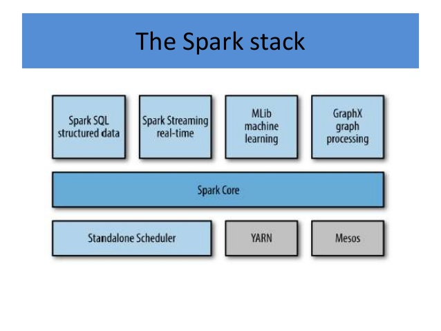
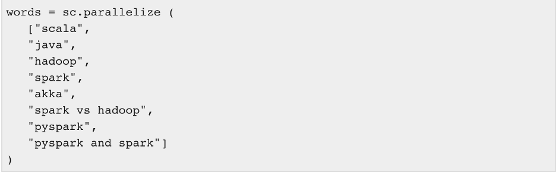
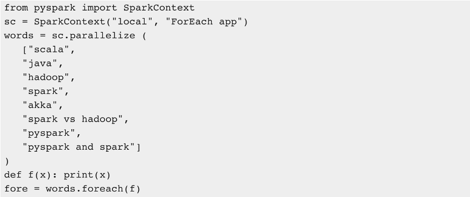
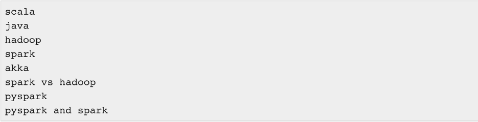
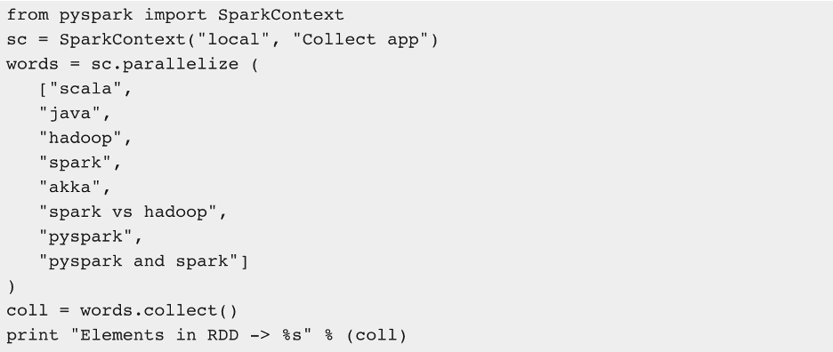
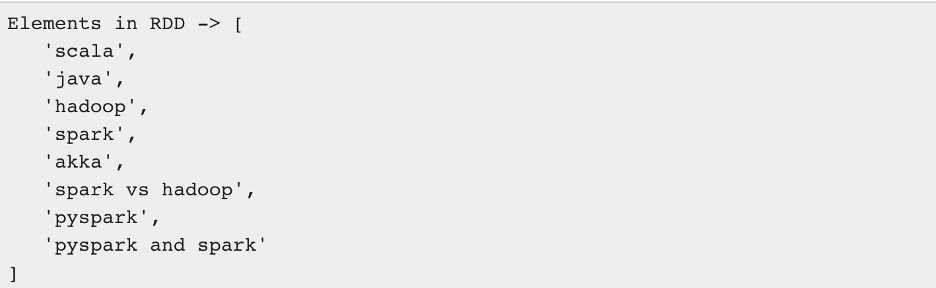

I. Spark Core
Apache Spark bắt đầu tại University of California, Berkeley vào năm 2009 với tên là "Spark research project", được giới thiệu public lần đầu tiên sau một năm (2010) trong một bài báo có tựa đề “Spark: Cluster Computing with Working Sets” viết bởi 5 nhà nghiên cứu của AMPlab - UC Berkeley.

Spark Core: là engine thực thi chung làm nền tảng cho Spark. Tất cả các chức năng khác được xây dựng dựa trên base là Spark Core. Nó cung cấp khả năng tính toán trên bộ nhớ RAM và cả bộ dữ liệu tham chiếu trong các hệ thống external storage.
-
Spark SQL: là một thành phần nằm trên Spark Core, giới thiệu một khái niệm trừu tượng hóa dữ liệu mới gọi là SchemaRDD, cung cấp hỗ trợ cho dữ liệu có cấu trúc và bán cấu trúc.
-
Spark Streaming: tận dụng khả năng lập lịch memory-base của Spark Core để thực hiện streaming analytics. Nó lấy dữ liệu theo mini-batches và thực hiện các phép biến đổi RDD (Bộ dữ liệu phân tán có khả năng phục hồi) trên các mini-batches dữ liệu đó.
-
MLlib (Machine Learning Library): là một framework machine learning phân tán trên Spark tận dụng khả năng tính toán tốc độ cao nhờ distributed memory-based của kiến trúc Spark.
-
GraphX: là một framework xử lý đồ thị phân tán. Nó cung cấp một API để thực hiện tính toán biểu đồ có thể mô hình hóa các biểu đồ do người dùng xác định bằng cách sử dụng API đã được tối ưu sẵn.
III. Spark RDD (Resilient Distributed Dataset)
Resilient Distributed Dataset là tập tài liệu phân phối có khả năng phục hồi

Câu lệnh trên tạo ra 1 mảng các string và được chia thành các phần bằng nhau dựa vào khai báo của Spark Context

Kết quả sau khi chạy lệnh foreach:


Sau khi chạy lệnh collect():
